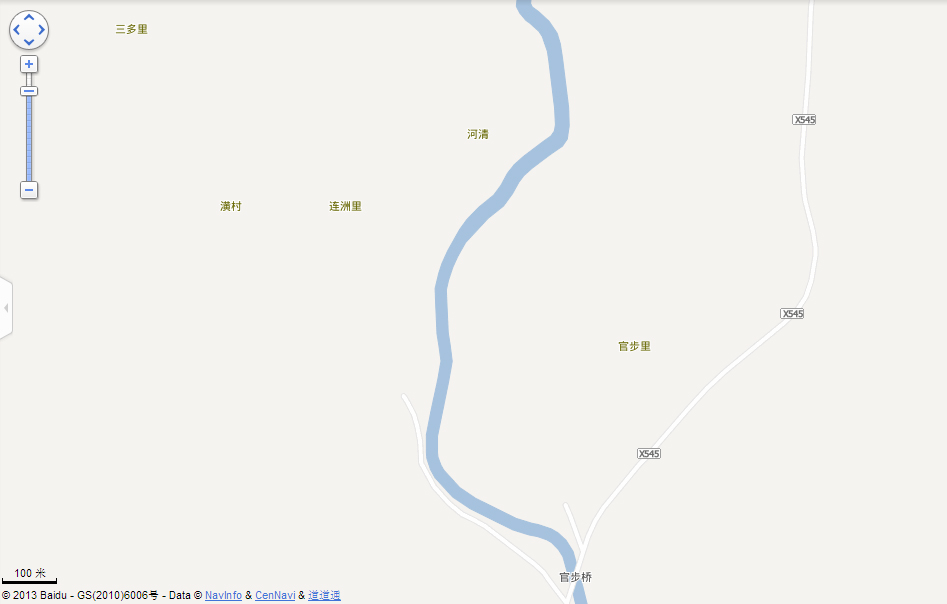
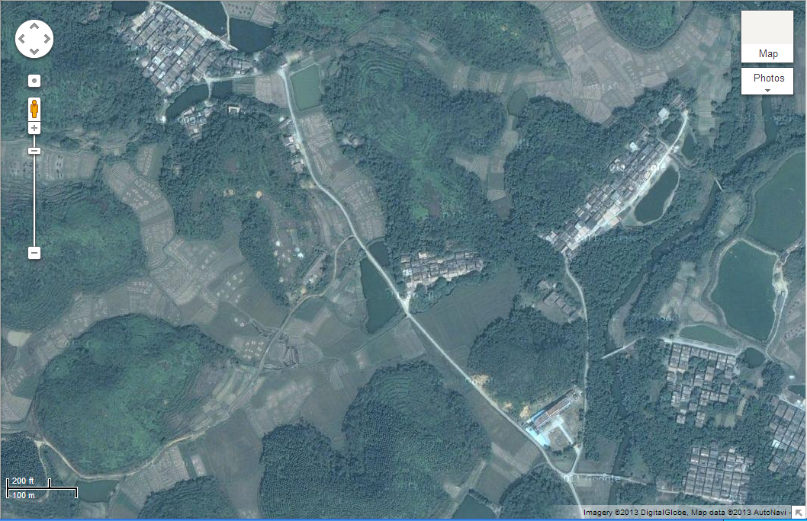

More Google and Baidu maps for Huang Village and its hamlets
Huang Village 潢村 and surrounding areas with the fork at the bottom center.
X545 crosses 官步橋 Gön Bù Kẽl Gon Bu Bridge towards the right.
On the left is the Huang Village Arch 潢村堡新門樓.
This maps shows only three hamlets: 連洲里 Lẽin Jiü Lǐ, 三多里 Xäm Ü Lǐ, and 河清里 Hõ Těin Lǐ.
Also on the map is 官步里, which is not part of 潢村.
Huang Village 潢村 with latitudes and longitudes of key areas:
| Key | Latitude | Longitude | Description |
|---|---|---|---|
| A | 22°12'29.83"N | 112°43'24.71"E | 潢村門樓 Võng Tûn Arch |
| B | 22°12'41.82"N | 112°43'14.59"E | Sign at Fork 潢村三叉路 showing directions to 5 hamlets |
| C | 22°12'41.89"N | 112°43'16.45"E | West end of 向南橋 Hëng Nǎm Kẽl Southward Bridge |
| D | 22°12'43.01"N | 112°43'15.14"E | Entrance to 育秀小學校 Yùk Xiü Elementary School |
| E | 22°12'47.34"N | 112°43'16.30"E | West end of 火車橋 Fō Chëh Kẽl Railroad bridge |
| F | 22°12'45.97"N | 112°43'10.28"E | West side of 星山 Xêng Sän Star Hil |
| G | 22°12'49.88"N | 112°43'6.41"E | Entrance to 連洲里 Lẽin Jiü Lǐ Lein Jiu hamlet |
| H | 22°12'51.89"N | 112°43'14.54"E | Entrance to 河清里 Hõ Těin Lǐ Ho Tein hamlet |
| I | 22°12'55.86"N | 112°43'22.02"E | North end of 廣隆橋 Gōng Lũng Kẽl. Gong Lung Bridge |
| J | 22°13'0.91"N | 112°43'0.07"E | Entrance to 三多里 Xäm Ü Lǐ Xam U hamlet |

Huang Village 潢村:
Upper left is 三多里 Xäm Ü Lǐ.
In the center is 連洲里 Lẽin Jiü Lǐ.
At the "V" shape 潢村三叉路 is the village school (育秀).
Above the school with just a few houses is 白雞 Bàk Gǎi.
On the upper right is 河清里 Hõ Těin Lǐ.
At the bottom right are 向北 Hëng Bāk and 向南 Hëng Nǎm.
The village that is cut off is not part of 潢村.
三多里 Xäm Ü Lǐ Sānduōlǐ (a.k.a. 舊村 Giù Tûn Jiùcūn Old Village)
連洲里 Lẽin Jiü Lǐ Liánzhóulǐ (a.k.a. 新村 Xïn Tûn Xīncūn New Village)
白雞 Bàk Gǎi Báijī White Chicken
河清里 Hõ Těin Lǐ Héqīnglǐ (a.k.a. 海邊 Hōi Béin Hǎibiān Riverside).
On the right is 廣隆橋 Gōng Lũng Kẽl. Gong Lung Bridge.
On the top a few houses at the head of the hamlet are cut off.
For these, refer to the less detailed map of Huang Village 潢村.
海清里 Hōi Těin Lǐ Hǎiqīnglǐ (a.k.a. 向北 Hëng Bāk Xiàngběi Northward).
On the left is the 火車橋 Railroad Bridge.
永清里 Vêin Těin Lǐ Yǒngqīnglǐ (a.k.a. 向南 Hëng Nǎm Xiàngnán Southward).
On the left is the
向南橋 Heng Nam Bridge.